theophilus aka reality
{head boy}
Theophilus, a true leader and a sight to behold, embodies handsomeness, confidence, and charisma. With his free-spirited nature, he spreads infectious energy and good vibes, inspiring those around him. His leadership qualities shine bright, guiding others with wisdom and compassion. But Theophilus's impact goes beyond his impressive presence; he has a heart of gold, filled with empathy, kindness, and generosity. He uplifts and motivates, bringing out the best in others. With his remarkable blend of talent, character, and leadership, Theophilus is a true gem. Let's celebrate his exceptional qualities, his unwavering positivity, and the unforgettable experiences he creates. He is a shining example of what it means to live life with purpose, passion, and dedication!"
stacy aka qwin savvy
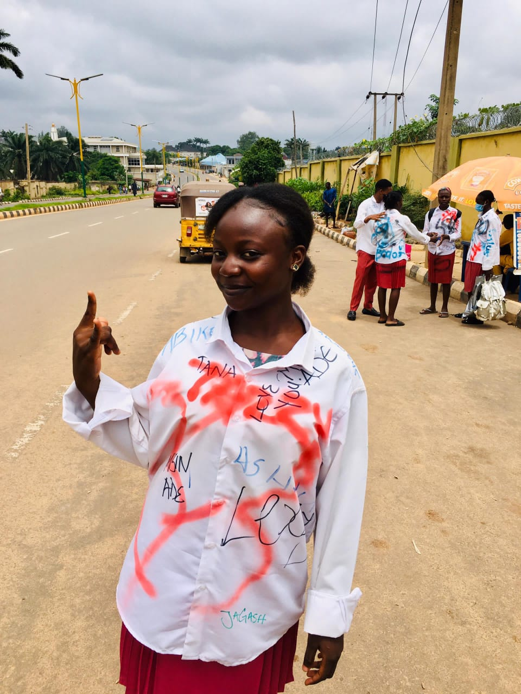Stacy is a radiant gem, illuminating the world with her captivating beauty and effortless charm. Her no-stress attitude and carefree spirit are contagious, making her a joy to be around. When she dances, her vibes are infectious, spreading happiness and energy to all who witness it. But Stacy's beauty goes beyond physical appearance; she has a heart of gold, filled with kindness, empathy, and compassion. Her positivity and warmth inspire us to be our best selves. Stacy's presence is a gift, reminding us to embrace life's beauty and let our true selves shine. Let's celebrate Stacy's remarkable spirit and the joy she brings to our lives!"
simeon aka simzy
{ast.sport boy}

SIMEON, a stunning combination of charm and athleticism, lights up the world with his captivating presence. With his chiseled good looks and free-spirited nature, he embodies the essence of confidence and joy . On the football field, his passion and energy are electric, inspiring teammates and fans alike. But Simeon's impact goes far beyond the game. His kindness, empathy, and generosity make him a beloved figure, always willing to lend a helping hand. With a heart of gold and a spirit of excellence, Simeon is the ultimate team player. Let's celebrate his remarkable blend of talent, character, and charisma, and the unforgettable experiences he creates on and off the field!"
obinna aka obinna
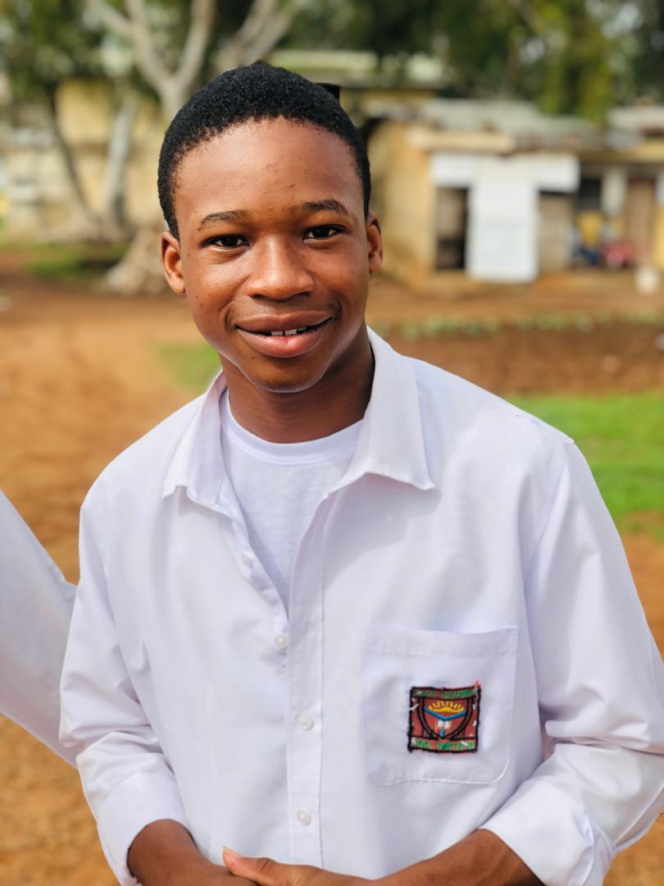OBINNA, a paragon of excellence, embodies handsomeness, intelligence, and a radiant aura, spreading contagious energy and good vibes. His impeccable fashion sense and attention to detail reflect his refined taste and dedication to excellence. But Obinna's true beauty lies within - his kind heart, compassionate spirit, and generous soul. With a brilliant mind and quick wit, he navigates life's challenges with ease and grace. Obinna's remarkable blend of charm, intelligence, and warmth makes him a beloved figure. He inspires others with his confidence, humility, and unwavering optimism. Let's celebrate Obinna's exceptional character, his remarkable achievements, and the unforgettable moments he creates. Obinna, you are a shining star, illuminating the world with your brilliance, elegance, and kindness!"
oreoluwa aka tazzy
{asst.dinning girl}
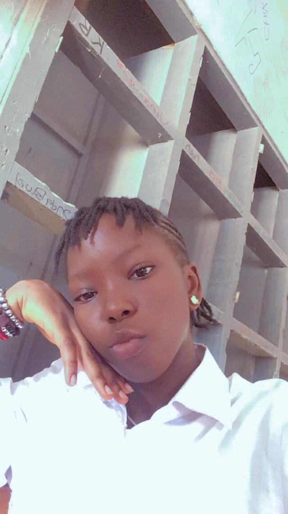
Oreoluwa, a radiant gem, shines brightly with her captivating beauty and effortless charm. Her stress-free spirit and captivating smile illuminate the world, making her a joy to behold. With her carefree and vibrant energy , she spreads happiness wherever she goes. But Oreoluwa's beauty extends far beyond physical appearance; she has a heart of gold, filled with kindness, empathy, and compassion. Her generosity and warmth inspire us to be our best selves. As a free-spirited individual, she embodies confidence and independence. Oreoluwa's presence is a gift, reminding us to embrace life's beauty and live with purpose. Let's celebrate her remarkable spirit, her infectious smile, and the unforgettable moments she creates!"
esther aka yunusarh
{health girl}
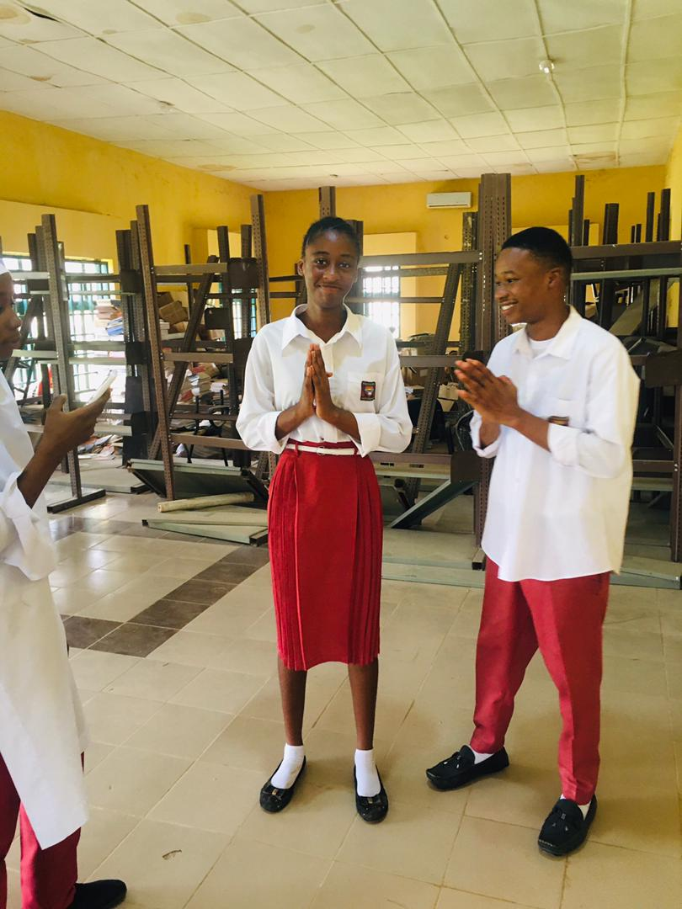
"Esther, a stunning gem, radiates beauty, confidence, and joy. Her stress-free spirit and captivating presence illuminate the world, drawing hearts to her. With her carefree and vibrant energy, she spreads happiness and positivity wherever she goes. Esther's confidence is contagious, inspiring others to embrace their true selves. Her free-spirited nature embodies independence and self-assurance . But Esther's beauty extends far beyond physical appearance; she has a heart of kindness, empathy, and compassion. Her generosity and warmth touch lives, fostering meaningful connections. Let's celebrate Esther 's remarkable spirit, her shining beauty, and the unforgettable moments she creates. She is a beacon of hope, reminding us to live life fearlessly, authentically, and with purpose."
enoch aka ender
{utility}
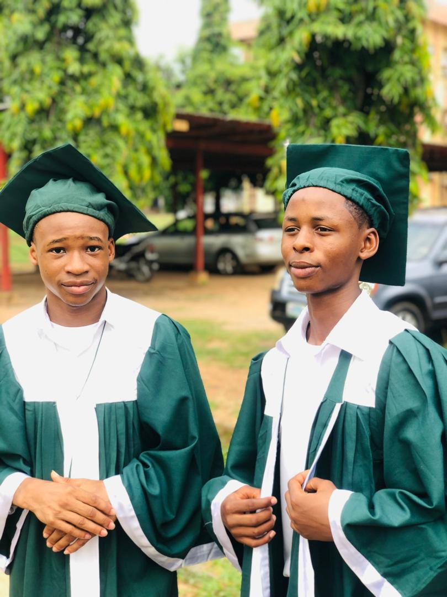
Enoch, a multifaceted talent, shines brightly with his captivating handsomeness and irresistible charm. As a free-spirited individual, he spreads good vibes, filling the air with positivity and energy. His voice , a melodic gift, mesmerizes audiences, while his drumming skills keep hearts beating in rhythm. But Enoch's impact extends far beyond his artistic talents; he has a heart of gold , filled with kindness, humility, and compassion. His generosity and warmth inspire others to pursue their passions. With his infectious smile and uplifting presence, Enoch creates an atmosphere of joy and unity. Let's celebrate his remarkable blend of talent, character, and spirit. Enoch, you are a true artist, leader, and inspiration, making the world a more beautiful place , one beat at a time!"
kimberly aka shammy
{red house queen}
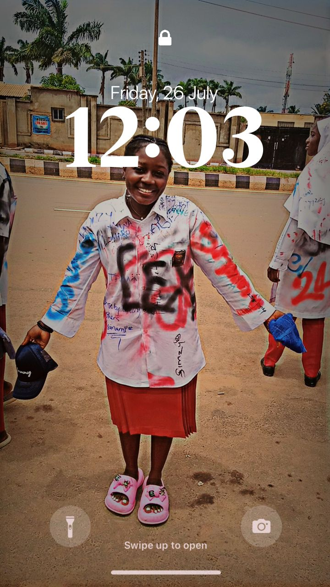
"Kimberly, a radiant gem, shines brightly with her captivating beauty and effortless charm. Her stress-free spirit and confident demeanor inspire others to embrace their true selves. As a free-spirited individual, she spreads joy and positivity wherever she goes. But Kimberly's beauty extends far beyond physical appearance; she has a heart of gold, deeply rooted in her Christian faith. Her kindness, compassion, and generosity touch lives, fostering meaningful connections. With her unwavering commitment to her values, Kimberly is a shining example of grace and humility. Let's celebrate her remarkable spirit, her unshakeable faith, and the unforgettable moments she creates. Kimberly, you are a beacon of hope, inspiring us to live with purpose, love, and devotion."
godwin aka gee-kay
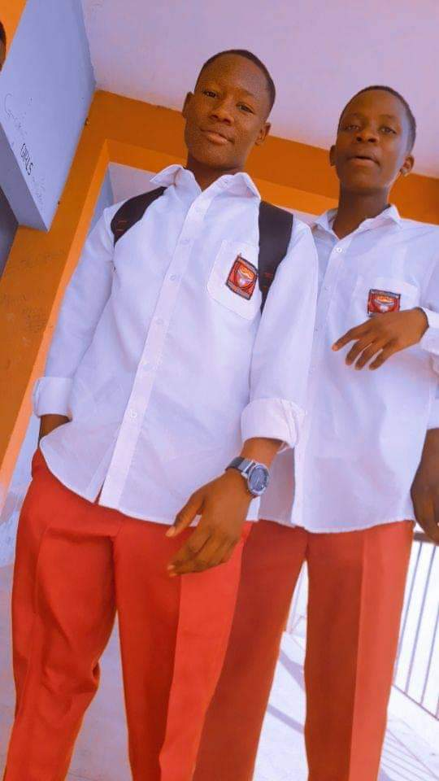Godwin, a captivating individual, radiates handsomeness, confidence, and warmth. His free-spirited nature spreads contagious energy, filling the air with good vibes and positivity. With a heart of gold, Godwin's kindness, empathy, and generosity inspire others to be their best selves. His infectious smile and uplifting presence create an atmosphere of joy and unity . Godwin's remarkable blend of charm, humility, and compassion makes him a beloved figure. He lights up the world with his presence, reminding us to live life with purpose and enthusiasm. Let's celebrate Godwin's exceptional character, his unwavering optimism, and the unforgettable moments he creates. Godwin, you are a shining star, illuminating the world with your warmth and kindness!"
christopher aka pablo
{sport boy}
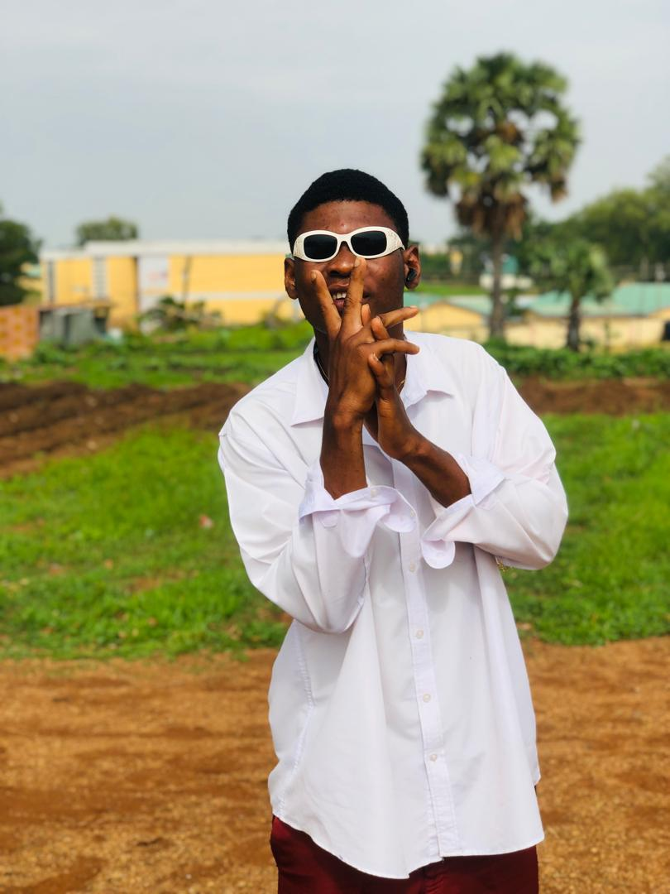
Christo, a phenomenal individual, embodies handsomeness, confidence, and a free-spirited nature, spreading infectious energy and good vibes. His bravery and fearlessness inspire others to push beyond limits. A sports enthusiast, Christo excels in every category, showcasing his versatility and dedication. But his impact extends far beyond physical prowess; he has a heart of gold, filled with kindness, empathy, and compassion. Christo's remarkable blend of charm, athleticism, and humility makes him a beloved figure. He embodies the true spirit of a champion, inspiring us to strive for excellence in all aspects of life. Let's celebrate Christo's exceptional qualities, his unwavering courage, and the unforgettable moments he creates. Christo, you are a shining example of what it means to live life with purpose, passion, and dedication!"
naphtali aka naph jay
{red house capt.}
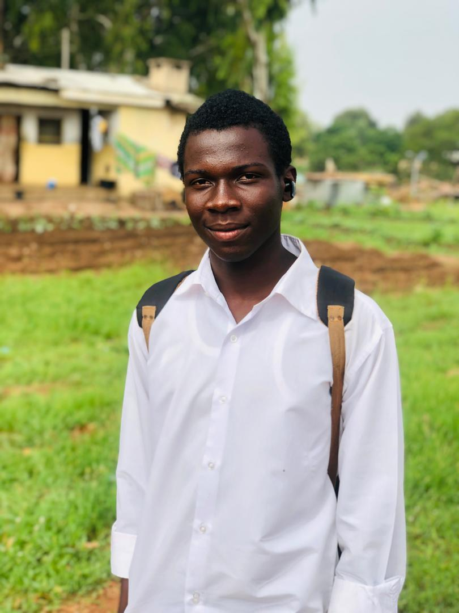
Naphtali, a captivating individual, radiates handsomeness, confidence, and warmth. His free-spirited nature spreads contagious energy, filling the air with good vibes and positivity. With a heart of gold, Naphtali's kindness, empathy, and generosity inspire others to be their best selves. His infectious smile and uplifting presence create an atmosphere of joy and unity. Naphtali's remarkable blend of charm, humility, and compassion makes him a beloved figure. He lights up the world with his presence, reminding us to live life with purpose and enthusiasm. Naphtali's authenticity and genuine spirit draw people to him, fostering meaningful connections. Let 's celebrate Naphtali's exceptional character, his unwavering optimism, and the unforgettable moments he creates. Naphtali, you are a shining star, illuminating the world with your warmth and kindness!"
agatha aka agi-bby
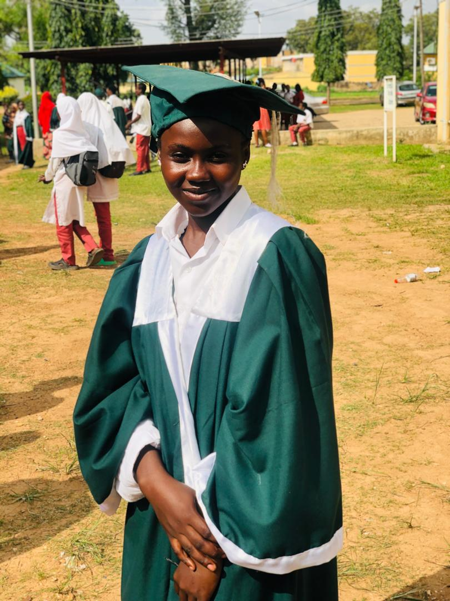Agatha, a serene gem, radiates beauty, confidence, and poise. Her stress-free spirit and quiet nature belie a depth of character that inspires admiration. As a free-spirited individual, she moves through life with effortless grace, leaving a trail of positivity in her wake. Agatha's confidence is contagious, empowering others to embrace their true selves . Her introspective nature belies a rich inner life, marked by kindness, empathy, and compassion. With a gentle strength, Agatha touches hearts and minds, fostering meaningful connections . Let's celebrate Agatha's remarkable blend of beauty, humility, and quiet confidence. She reminds us that true strength lies in serenity, and that sometimes, the most powerful statements are made in silence."
mark aka smiles
{yellow house capt.}
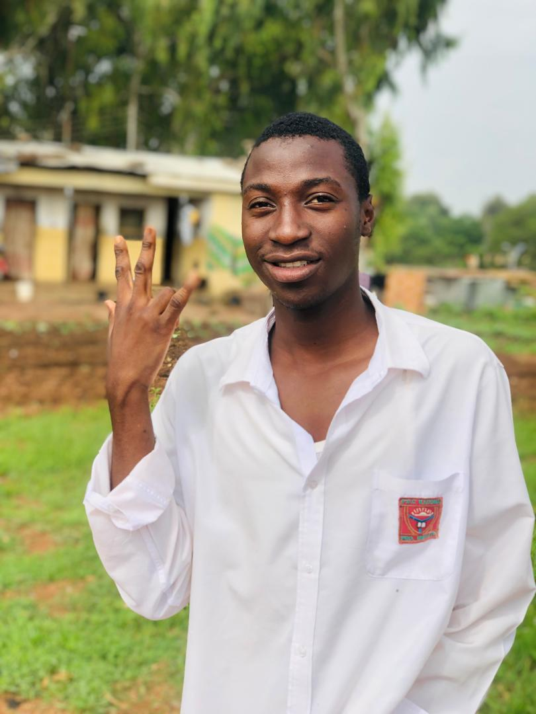
Mark, a phenomenal individual, embodies handsomeness, confidence, and a free-spirited nature, spreading infectious energy and good vibes. As a skilled football player, he excels with precision, strength, and agility, inspiring his team and fans. But Mark's impact goes beyond his athletic prowess; his kindness, humility, and compassion make him a beloved figure. With a heart of gold, he uplifts those around him, fostering a sense of community and camaraderie. Mark's remarkable blend of athleticism, charm, and warmth makes him a true champion. He reminds us to live life with passion, purpose, and joy. Let's celebrate Mark's exceptional character, his remarkable achievements, and the unforgettable moments he creates. Mark, you are a shining star, illuminating the world with your brilliance , kindness, and generosity!"
faith aka boss ozil
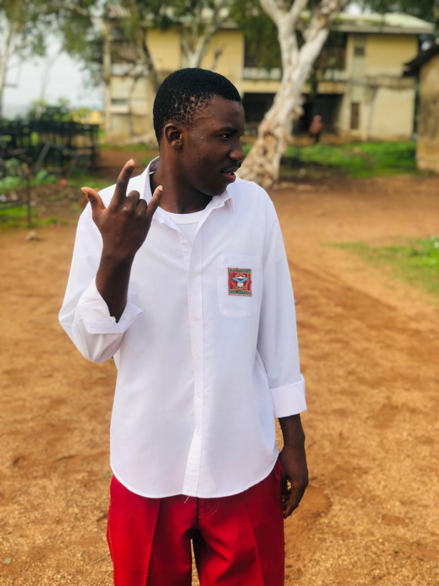Faith, a debonair gentleman, embodies handsomeness, confidence, and a free-spirited nature, spreading infectious energy and good vibes. His impeccable fashion sense turns heads , but it's his inner qualities that truly make him shine. With a heart of gold, Faith's kindness, empathy, and generosity inspire others to be their best selves. His wealth and success are matched only by his humility and compassion. Faith's remarkable blend of charm , style, and substance makes him a beloved figure. He lights up the world with his presence, reminding us to live life with purpose, passion, and flair. Let's celebrate Faith's exceptional character, his unwavering optimism, and the unforgettable moments he creates. Faith, you are a true original , a masterclass in elegance, and a shining example of what it means to live life to the fullest!"
samuel aka big samzy
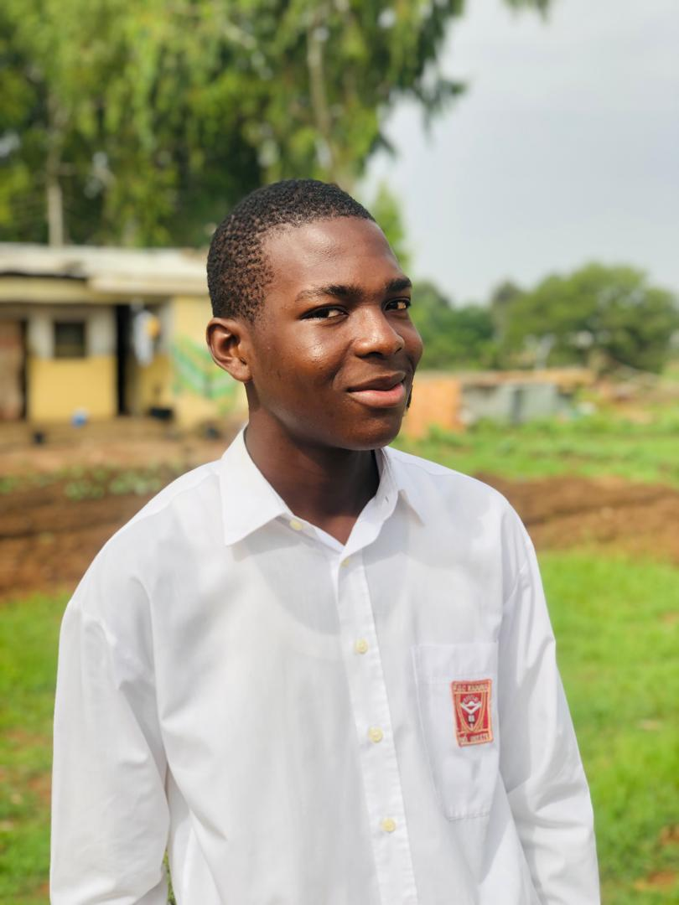
Samuel, a captivating individual, radiates handsomeness, confidence, and a carefree spirit, spreading contagious energy and good vibes. His playful, boy-like charm endears him to everyone, reminding us to embrace life' s simplicity and joy. But beneath his laid-back demeanor lies a heart of gold, filled with kindness, empathy, and compassion. Samuel's remarkable blend of charm, humility, and warmth makes him a beloved figure. He lights up the world with his presence, reminding us to live life with purpose, enthusiasm, and a sense of adventure. Samuel's authenticity and genuine spirit foster meaningful connections, and his infectious laughter brings people together. Let's celebrate Samuel's exceptional character, his unwavering optimism, and the unforgettable moments he creates."